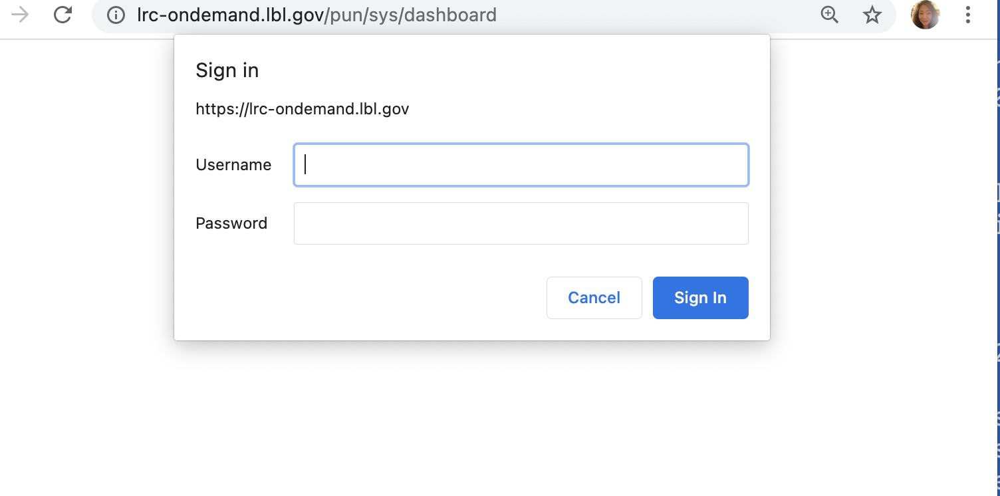
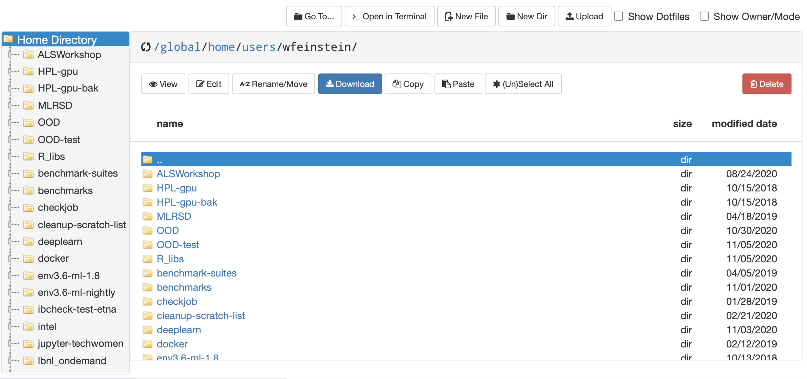
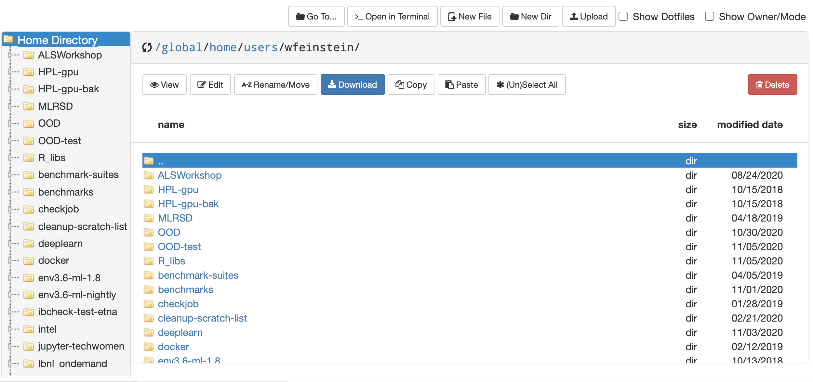
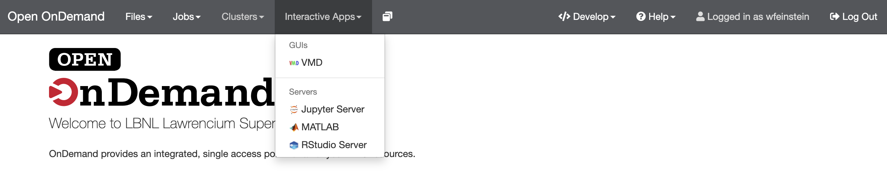
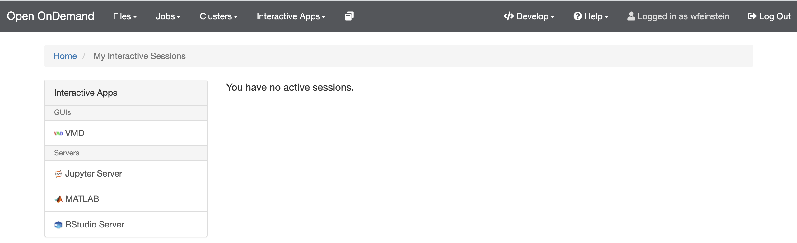
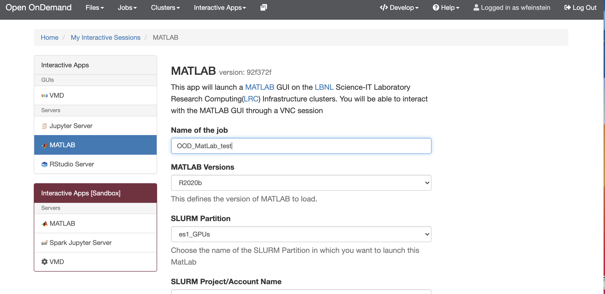
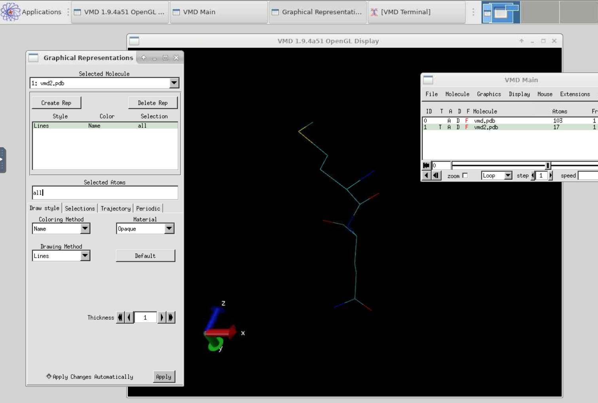

Introduction
Slides and sample codes can be found on github https://github.com/lbnl-science-it/Training-OpenOnDemand
Video will be posted
There will be a hands-on session at the end of this training
Send your questions to chatroom
Fill out training survey
Outline
- What is Open OnDemand on Lawrencium
- How to access OOD
- Features
- File management
- Cluster shell access
- Job submission and monitoring
- Interactive apps
- Hands-on exercises
What is Lawrencium Open OnDemand
- Lawrencium OOD portal is based on an open source web platform https://openondemand.org/
- The project is designed by Ohio Supercomputer Center
- Users can access HPC cluster resources and services via a web browser
- Provide an intuitive interface and allows new users to be instantly productive at using the HPC resources for their research
- An alternative convenient way for experienced users to access the HPC resources.
- Flexible and extensible design that makes it easy to deploy new services as needed.
OOD at the System Level

Services Provided
- Easy file transfer and management
- Command-line shell access
- Job submission and monitoring
- Interactive apps, graphic desktop environment
- Juyter Notebook
- RStudio
- MatLab
- VMD
- More apps will be added
How to Access
https://lrc-ondemand.lbl.gov/
Authentication

- Username: Lawrencium username
- Password: pin + OTP
Dashboard

Files
 

File/Directory Management
- Conventional command-line approach
- Linux file editing, vi, nano, emacs
- File transfer: rsync, scp
- Globus still an option of file transfer
- New avenue to manage files/dirs
- Viewing files
- Text editing
- Copy/Paste
- Renaming files
- Creating files
- Creating directories
- Deleting files
- File upload/download
Cluster Shell Access
Provide the conventional cluster access: command-line/terminal


Job Management
Job monitoring, composing and submission


Job Composer
- From templates
- From specific path
- From selected job

Job Templates
- Provided by system admins
- Defined by users

Job Submission Script

Job Submission Directory
- Two ways to cope with the default directory created by the job composer.
The default directory as the working directory of your job.
/global/home/users/wfeinstein/ondemand/data/sys/myjobs/projects/default
You need to upload all input files to that directory before you can click the submit button.
This can be done by clicking ‘Open Dir’ right beneath the job script contents.
A file explorer will open the job directory in a new tab where you can do file transfers.
Have the input files stored somewhere in the cluster and don’t want to move them around
Prefer to have an organized directories by yourself, such as home or scratch…
Add one command line in your job script
cd /path/to/job_working_dir
Interactive Apps
 
Jupyter Notebook App
- Three types of use:
- Interactive-mode, for exploration
- Interactive-mode-gpu, for exploration
- Compute mode: standarded Lawrencium partitions (e.g.: lr5,lr6,es1…)

Slurm Account, Partition, QOS from an Access Shell
sacctmgr show association user=wfeinstein -p
Cluster|Account|User|Partition|Share|Priority|GrpJobs|GrpTRES|GrpSubmit|GrpWall|GrpTRESMins|MaxJobs|MaxTRES|MaxTRESPerNode|MaxSubmit|MaxWall|MaxTRESMins|QOS|Def QOS|GrpTRESRunMins|
perceus-00|pc_scs|wfeinstein|lr6|1||||||||||||lr_debug,lr_lowprio,lr_normal|||
perceus-00|ac_test|wfeinstein|lr5|1||||||||||||lr_debug,lr_lowprio,lr_normal|||
perceus-00|pc_test|wfeinstein|lr4|1||||||||||||lr_debug,lr_lowprio,lr_normal|||
perceus-00|pc_test|wfeinstein|lr_bigmem|1||||||||||||lr_debug,lr_lowprio,lr_normal|||
perceus-00|lr_test|wfeinstein|lr3|1||||||||||||condo_test|||
perceus-00|scs|wfeinstein|es1|1||||||||||||es_debug,es_lowprio,es_normal|||
...
Jupyter Notebook

Matlab App
- Enabled on GPU and CPU nodes

Matlab App Launch

Matlab App GUI

VMD App (Visual Molecular Dynamics)
A molecular visualization program for displaying, animating, and analyzing large biomolecular systems using 3-D graphics and built-in scripting.

VMD Example

RStudio App

RStudio GUI

Log out and Cleanup
- Log out the portal properly
- Clicking ‘Log out’ from the top navigation bar;
- Cleanup
- The portal stores temporary files for interactive apps in $HOME/ondemand/data/sys/dashboard/.
- It is a good habit to clean this directory periodically.
rm -rf $HOME/ondemand/data/sys/dashboard/batch_connect/sys/*
Getting help
- Virtual Office Hours:
- Time: 10:30am - noon (Wednesdays)
- Online request
- Sending us tickets at hpcshelp@lbl.gov
- More information, documents, tips of how to use LBNL Supercluster http://scs.lbl.gov/
To improve our HPC training and services, please fill out Training Survey
Hands-on Exercise
Open Ondemand Navigation
https://lrc-ondemand.lbl.gov/